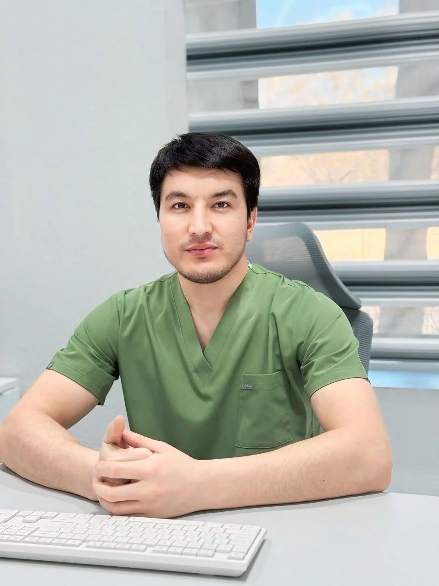

⚡
Prostata bezini lazerli davolash
Prostata adenomasini lazer yordamida olib tashlash — kam qon yo‘qotish, qisqa yotish muddati va tez tiklanish.
- Siydik chiqarishni tiklash
- Tezkor reabilitatsiya
- Yuqori xavfsizlik
Urolog-androlog shifokor. Lazerli va mikroxirurgik usullar bilan prostata, siydik toshi, varikosele va jinsiy zaiflikni samarali, xavfsiz hamda og‘riqsiz davolash.

Har bir bemorga individual yondashuv, aniq tashxis va eng kam invaziv davolash usullari.
Prostata adenomasini lazer yordamida olib tashlash — kam qon yo‘qotish, qisqa yotish muddati va tez tiklanish.
Buyrak va siydik yo‘li toshlarini endourologik usulda, lazer bilan maydalab, kesmasiz olib tashlash.
Erkaklar bepushtligining eng ko‘p sababi bo‘lgan varikoselening zamonaviy mikroxirurgik operatsiyasi.
Konservativ davolash hamda og‘ir shakllarida jinsiy olatni protezlash amaliyotlari.
1994-yilda tug‘ilganman. Qo‘qon shahridagi VitaMed klinikasida urolog-androlog shifokor bo‘lib faoliyat yuritaman. Faoliyatim davomida 1000 dan ortiq yuqori texnologik operatsiyani muvaffaqiyatli amalga oshirganman.
Har bir bemor uchun eng samarali, xavfsiz va minimal invaziv usulni tanlashga intilaman.
Lazer va mikroxirurgik texnologiyalar bilan jihozlangan klinika.
Har bir holat chuqur tekshiriladi, davolash individual rejalashtiriladi.
Nozik masalalarda hurmat, e’tibor va maxfiylik kafolatlanadi.
Lazerli usul kam qon yo‘qotish bilan, qisqa vaqt kasalxonada yotish va tez tiklanish imkonini beradi.
Ha, endourologik usulda toshlar lazer yordamida maydalanib, teri kesmasdan olib tashlanadi.
Ha, varikosele erkaklar bepushtligining eng ko‘p uchraydigan sabablaridan biri. Mikroxirurgik operatsiya zamonaviy va samarali usul hisoblanadi.
+998 91 151 55 88 raqamiga qo‘ng‘iroq qiling yoki Telegram orqali yozing. Qabul Qo‘qon shahridagi VitaMed klinikasida.
Maslahat va operatsiyalar uchun qo‘ng‘iroq qiling — barcha savollaringizga javob beramiz.
+998 91 151 55 88Qo‘qon shahri, VitaMed klinikasi
+998 91 151 55 88
Urolog · Androlog · Endourolog